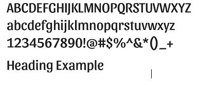
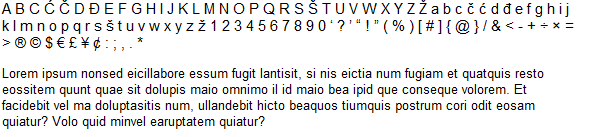
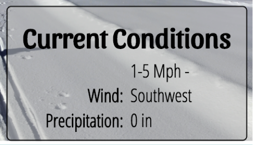

The client would like a web based weather app created. The purpose of the site is to give current weather conditions in 3 different ways. The initial landing page will give the weather for the current location based on the Geocoding information given by the browser. The second is weather for 3 specific locations accessible through a dedicated link, and the third is weather for any location determined by a search string.
Primary audience is adults ages 18-30. Most will be students. Access to the site will be split between mobile devices and laptops.
College students move around quite a bit so one goal would be to quickly get the weather conditions for their current location as they head off to class or study. They are also often far from their homes so the ability to quickly get the conditions for a specific location is important as well. The third goal deals with planning for travels...the ability to get weather conditions for any location will help with last minute packing for road trips.
⦁ Name: Joe Cool
⦁ Occupation: student
⦁ Age: undetermined
⦁ Interests: Traveling, seeing new things
⦁ Motivation: Joe is not into planning. His last minute scrambling, whether it is getting to class in the morning or heading out on his latest adventure, has left him unprepared for weather conditions many times (He is tired of sleeping in the rain and snow). He would like to be more prepared...without having to put much effort into it...or planning.
⦁ Environment: Joe is comfortable using laptops and Mobile devices, he will most often be found on a smart phone however. Many of the places he frequents do not have great signal…he is often dealing with 3G speeds
⦁ Name: Lucy van Pelt
⦁ Occupation: student
⦁ Age: 18
⦁ Interests: Giving advice, Psychology
⦁ Motivation: Lucy is a no nonsense young lady who likes to help those around her. She wants easy access to the weather conditions for many locations so that she can always be prepared to offer some unsolicited advice to her peers.
⦁ Environment: Lucy has a smart phone that she uses to keep her eye on her social media ‘friends’. She is usually not very far from her trusty laptop however. Most of her time online is spent either on the University network or the apartment broadband.
All weather pages should include Location name, temperature, high, low, current weather descriptor, precipitation, and wind on small, and hourly temps should be added on larger screens. (See provided weather data file for more details)
⦁ Home: weather for the current location. Current location should be determined by using the Geolocation API of the browser. This information should be passed to the WeatherUnderground API (https://www.wunderground.com/weather/api/) to retrieve the current conditions.
⦁ Franklin, Greenville, Springfield: weather for each specific location. The weather for The Franklin and Greenville pages should be pulled from a local JSON file that will be provided.
⦁ Search: Begins with only a search box, characters entered will cause a list of suggested matches to appear. Selected location will pull up the weather. The search term from the field should be sent to the WeatherUnderground autocomplete API (https://www.wunderground.com/weather/api/d/docs?d=autocomplete-api&MR=1), and the results used to pull the current conditions for the selected location.
The client provided the following initial concept for a name and logo: (You recognize that this logo could easily be re-created entirely with CSS using the right font and HTML entities… ⚀ ⚅)
The client also expressed interest in the following fonts:
Heading Font: Sansita From Google Fonts:

Body Copy Font: Helvetica

(add usability note on each element)
Link:normal : #4A4653
Link:visited : #4A4653
Link:hover: #E7EF61
Link:active : #A6D8DB
Opaque rounded content box:

background-color: rgba(200,200,200,.6);
margin: .2em auto;
border: 1px solid;
border-radius: 5px;